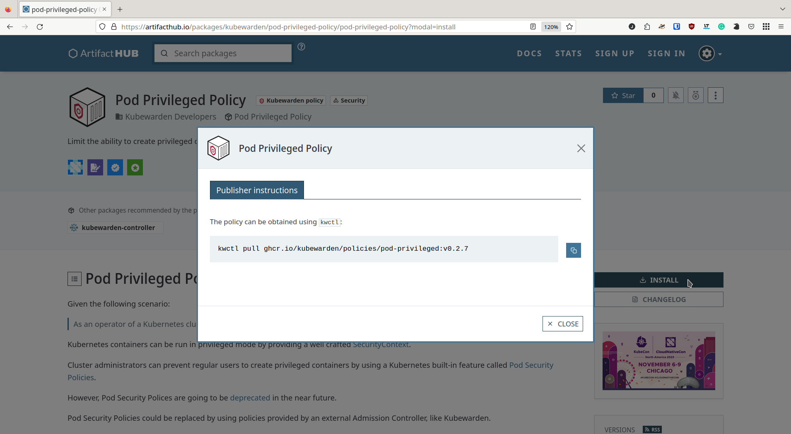

|
本文档采用自动化机器翻译技术翻译。 尽管我们力求提供准确的译文，但不对翻译内容的完整性、准确性或可靠性作出任何保证。 若出现任何内容不一致情况，请以原始 英文 版本为准，且原始英文版本为权威文本。 |
|
这是尚未发布的文档。 Admission Controller 1.34-dev. |
常用任务
这描述了在您 安装 SUSE Security Admission Controller 后在 Kubernetes 集群中常见的任务。
这些单独的任务是按逻辑顺序排列的。
测试策略
Admission Controller 使用两个工具来帮助您查找策略并在本地测试它们：
-
Artifact Hub，使用他们针对 Admission Controller 策略的软件包过滤器
-
kwctl，一个 CLI 工具
Artifact hub
Artifact hub 托管社区贡献的策略。例如，您可以找到由 Admission Controller 开发者创建的 已弃用的 Kubernetes Pod 安全策略 的替代品。
如下面的截图所示，一旦您找到感兴趣的策略，选择 Install 按钮并使用 kwctl 获取您集群的策略。

|
以前，Admission Controller 策略可以在 Admission Controller 策略中心 找到。这已经被 退役。 现在可以从 https://artifacthub.io 获取策略。 |
kwctl CLI 工具
kwctl 是 Admission Controller 的 CLI 工具，供策略作者和集群管理员在应用于 Kubernetes 集群之前测试策略。
该工具的界面与 docker CLI 工具类似。
使用案例
您可以使用 kwctl 来帮助处理这些场景：
作为策略作者
-
对您的策略进行端到端测试：测试您的策略以应对精心设计的Kubernetes请求，并确保您的策略按预期行为运行。您甚至可以测试需要访问正在运行的集群的上下文感知策略。
-
在您的Wasm模块中嵌入元数据：二进制文件包含其执行所需权限的注释。您可以使用`kwctl`检查和修改这些注释。
-
将策略发布到OCI注册表：该二进制文件是完全合规的OCI对象，可以存储在OCI注册表中。
作为集群管理员
-
检查远程策略：给定在OCI注册表或HTTP服务器中的策略，显示该策略的所有静态信息。
-
在您的集群中进行策略的试运行：测试该策略以应对精心设计的Kubernetes请求，并确保该策略在您提供的输入数据下按预期行为运行。您还可以在试运行模式下测试需要访问正在运行的集群的上下文感知策略。
-
为您的策略生成初始
ClusterAdmissionPolicy脚手架： 生成一个YAML文件，包含所有必需的设置，可以使用kubectl应用到您的 Kubernetes 集群。
安装
kwctl 稳定版本的二进制文件可从 GitHub 储存库 获取。要从 GitHub kwctl 储存库 构建，您需要一个 Rust 开发环境。
用法
您可以通过运行以下命令列出所有的 kwctl 选项和子命令：
$ kwctl --help
kwctl 0.2.5
Admission Controller Developers <cncf-kubewarden-maintainers@lists.cncf.io>
Tool to manage Admission Controller policies
USAGE:
kwctl [OPTIONS] <SUBCOMMAND>
OPTIONS:
-h, --help Print help information
-v Increase verbosity
-V, --version Print version information
SUBCOMMANDS:
annotate Add Admission Controller metadata to a WebAssembly module
completions Generate shell completions
digest Fetch the digest of its OCI manifest
help Print this message or the help of the given subcommand(s)
inspect Inspect Admission Controller policy
policies Lists all downloaded policies
pull Pulls a Admission Controller policy from a given URI
push Pushes a Admission Controller policy to an OCI registry
rm Removes a Admission Controller policy from the store
run Runs a Admission Controller policy from a given URI
scaffold Scaffold a Kubernetes resource or configuration file
verify Verify a Admission Controller policy from a given URI using Sigstore以下是一些命令使用示例：
-
列出策略：列出存储在本地
kwctl注册表中的所有策略-
命令：
kwctl policies
-
-
获取策略：下载并将策略存储在本地
kwctl存储中-
命令：
kwctl pull <policy URI>$ kwctl pull registry://ghcr.io/kubewarden/policies/pod-privileged:v0.1.9 $ kwctl policies +--------------------------------------------------------------+----------+---------------+--------------+----------+ | Policy | Mutating | Context aware | SHA-256 | Size | +--------------------------------------------------------------+----------+---------------+--------------+----------+ | registry://ghcr.io/kubewarden/policies/pod-privileged:v0.1.9 | no | no | 59e34f482b40 | 21.86 kB | +--------------------------------------------------------------+----------+---------------+--------------+----------+
-
-
了解策略的工作原理：检查策略元数据
-
命令：
kwctl inspect <policy URI>$ kwctl inspect registry://ghcr.io/kubewarden/policies/pod-privileged:v0.1.9 Details title: pod-privileged description: Limit the ability to create privileged containers author: Flavio Castelli url: https://github.com/kubewarden/pod-privileged-policy source: https://github.com/kubewarden/pod-privileged-policy license: Apache-2.0 mutating: false context aware: false execution mode: kubewarden-wapc protocol version: 1 Annotations io.kubewarden.kwctl 0.1.9 Rules ──────────────────── --- - apiGroups: - "" apiVersions: - v1 resources: - pods operations: - CREATE ──────────────────── Usage This policy doesn't have a configuration. Once enforced, it will reject the creation of Pods that have at least a privileged container defined.
-
-
评估策略：评估策略，并在可用时找到匹配您要求的正确配置值。
您需要对 Kubernetes REST APIs 有一定的了解。
-
命令：
kwctl run -r <"Kubernetes Admission request" file path> -s <"JSON document" file path> <policy URI> -
方案 1:
-
请求评估：创建一个没有 'privileged' 容器的 pod
$ kwctl run registry://ghcr.io/kubewarden/policies/pod-privileged:v0.1.9 -r unprivileged-pod-request.json {"uid":"C6E115F4-A789-49F8-B0C9-7F84C5961FDE","allowed":true,"status":{"message":""}} -
下载策略二进制文件的等效命令：
`$ kwctl run file://$PWD/pod-privileged-policy.wasm -r unprivileged-pod-request.json {"uid":"C6E115F4-A789-49F8-B0C9-7F84C5961FDE","allowed":true,"status":{"message":""}} -
结果：该策略允许请求
-
-
方案 2:
-
请求评估：创建一个至少包含一个 'privileged' 容器的 pod
-
命令：
kwctl run registry://ghcr.io/kubewarden/policies/pod-privileged:v0.1.9 -r privileged-pod-request.json -
下载策略二进制文件的等效命令：
kwctl run file://$PWD/pod-privileged-policy.wasm -r privileged-pod-request.json -
输出：
{ "uid": "8EE6AF8C-C8C8-45B0-9A86-CB52A70EC50D", "allowed": false, "status": { "message": "User 'kubernetes-admin' cannot schedule privileged containers" } } -
结果：该策略拒绝请求
-
有关更复杂的示例，请参阅博客文章 向 Kubernetes 管理员介绍
kwctl。 -
实施策略
您通过定义一个 ClusterAdmissionPolicy 来实施策略，然后使用 kubectl 将其部署到您的集群中。
kwctl 帮助从您想要实施的策略生成一个 ClusterAdmissionPolicy。
在您生成了 ClusterAdmissionPolicy 并将其应用到您的集群后，您可以按照下面的 快速入门 中描述的步骤进行操作：
-
从策略
ClusterAdmissionPolicy生成manifest并将其保存到文件中-
命令：
kwctl scaffold manifest -t ClusterAdmissionPolicy <policy URI> > <"policy name".yaml>$ kwctl scaffold manifest -t ClusterAdmissionPolicy registry://ghcr.io/kubewarden/policies/pod-privileged:v0.1.9 --- apiVersion: policies.kubewarden.io/v1alpha2 kind: ClusterAdmissionPolicy metadata: name: privileged-pods spec: module: "registry://ghcr.io/kubewarden/policies/pod-privileged:v0.1.9" settings: {} rules: - apiGroups: - "" apiVersions: - v1 resources: - pods operations: - CREATE mutating: false
默认情况下，
name的值设置为generated-policy。 您可能希望在部署ClusterAdmissionPolicy之前编辑它。 前一个示例中的名称设置为privileged-pods。 -
-
将
ClusterAdmissionPolicy部署到您的 Kubernetes 集群中-
命令：
kubectl apply -f <"policy name".yaml>$ kubectl apply -f pod-privileged-policy.yaml clusteradmissionpolicy.policies.kubewarden.io/privileged-pods created
-
在部署 ClusterAdmissionPolicy 后，发送到您的集群的所有请求都会根据策略进行评估，前提是它们在策略范围内。